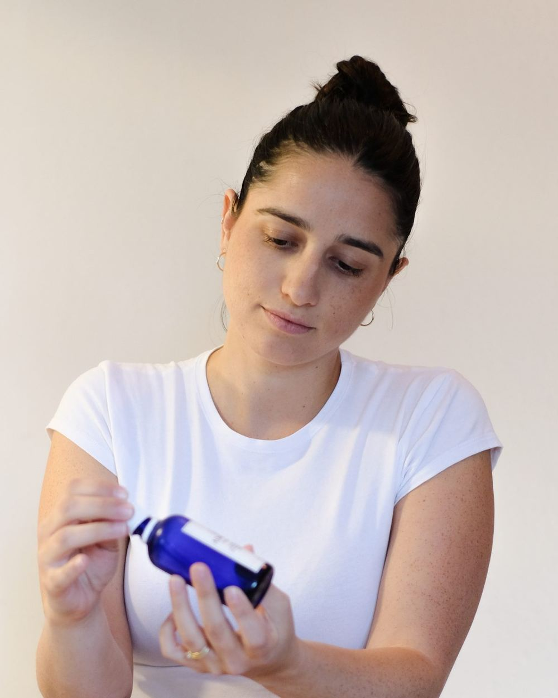

מבט הוליסטי על אקנה: מה העור שלך מנסה לספר?
אקנה היא ממש לא רק "בעיה של גיל ההתבגרות". מה משפיע על העור מבפנים, ואיך נראה טיפול טבעי והוליסטי.
לקריאה ←על נטורופתיה, ארומתרפיה, רפלקסולוגיה ופרחי באך — מהקליניקה ומהלימודים.

אקנה היא ממש לא רק "בעיה של גיל ההתבגרות". מה משפיע על העור מבפנים, ואיך נראה טיפול טבעי והוליסטי.
לקריאה ←כפות הרגליים שלנו נושאות אותנו לכל מקום. איך רפלקסולוגיה עובדת, במה היא תומכת – ותרגיל ביתי קטן להרגעה מיידית.
לקריאה ←לפעמים נדמה לך שרק אצלך הראש עובד שעות נוספות. מהם פרחי באך, איך הם עובדים – ולמה רוב הסיכויים שכבר השתמשת בהם.
לקריאה ←פעמים רבות, המפתח לריכוז הוא דווקא הרגעה. ארומתרפיה לילדים, לסטודנטים ולמבוגרים – ואיך משלבים אותה ביומיום.
לקריאה ←